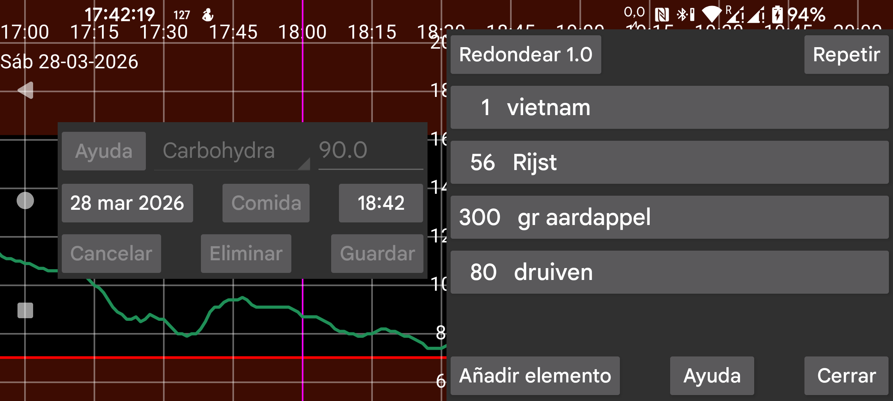
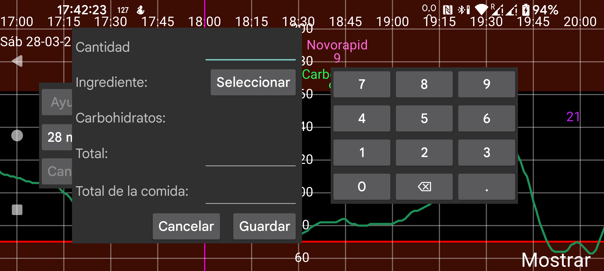
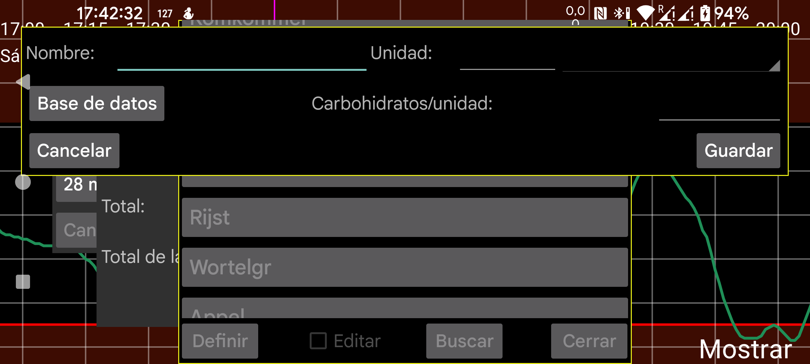

Comida
La cantidad total de carbohidratos la calcula el programa a partir del tamaño de los ingredientes. También es posible indicar la cantidad total de carbohidratos de este ingrediente o de toda la comida; en ese caso se calcula la cantidad necesaria de ese ingrediente. Pulsa Añadir componente para añadir un componente a la comida. En la pantalla que se abre puedes seleccionar un ingrediente e indicar la cantidad, o bien la cantidad total de carbohidratos de toda la comida o de ese ingrediente. Al pulsar Seleccionar o el ingrediente ya indicado, se abre una lista de ingredientes ya definidos. Puedes definir un ingrediente nuevo pulsando Definir. Entonces puedes indicar nombre, unidad y carbohidratos por unidad. También puedes pulsar Base de datos; así entrarás en una base de datos de composición de alimentos, donde puedes buscar un ingrediente y, al pulsar Seleccionar, incorporarlo a la definición del ingrediente con nombre, unidad y carbohidratos por unidad.